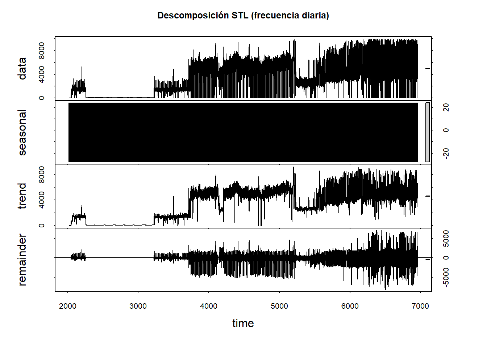

3 Análisis exploratorio de una serie de tiempo (MA, rezagos y estacionalidad)
- Carga de librerías y datos
## Warning: package 'readr' was built under R version 4.4.3##
## Adjuntando el paquete: 'dplyr'## The following objects are masked from 'package:stats':
##
## filter, lag## The following objects are masked from 'package:base':
##
## intersect, setdiff, setequal, union## Warning: package 'ggplot2' was built under R version 4.4.3##
## Adjuntando el paquete: 'lubridate'## The following objects are masked from 'package:base':
##
## date, intersect, setdiff, union## Warning: package 'zoo' was built under R version 4.4.3##
## Adjuntando el paquete: 'zoo'## The following objects are masked from 'package:base':
##
## as.Date, as.Date.numeric## Warning: package 'forecast' was built under R version 4.4.3## Registered S3 method overwritten by 'quantmod':
## method from
## as.zoo.data.frame zoo1.1 Lectura del CSV
csv_dir <- "C:/Users/Lenovo/PUJ Cali/OSCAR VELASQUEZ CHALA - Proyecto Aplicado - Proy. Demanda Electrica/2. Fuentes de Datos"
csv_name <- "015 SOLO POTENCIA PARA SUBI A BOOKDOWN.csv"
csv_path <- file.path(csv_dir, csv_name)
df <- tryCatch(
readr::read_csv(csv_path, show_col_types = FALSE),
error = function(e) readr::read_csv2(csv_path, show_col_types = FALSE)
)
glimpse(df)## Rows: 118,647
## Columns: 2
## $ FECHA <dttm> 2018-01-15 00:00:00, 2018-01-15 01:00:00, 2018-01-15 0…
## $ VALOR_IMPUTADO <dbl> 0.6000, 0.5575, 0.5000, 0.5000, 0.5000, 0.5000, 0.4450,…- Lectura y preparación
df <- tryCatch(
readr::read_csv(csv_path, show_col_types = FALSE),
error = function(e) readr::read_csv2(csv_path, show_col_types = FALSE)
)
stopifnot("No existe la columna FECHA" = time_col %in% names(df))
stopifnot("No existe la columna VALOR_IMPUTADO" = y_col %in% names(df))
glimpse(df)## Rows: 118,647
## Columns: 2
## $ FECHA <dttm> 2018-01-15 00:00:00, 2018-01-15 01:00:00, 2018-01-15 0…
## $ VALOR_IMPUTADO <dbl> 0.6000, 0.5575, 0.5000, 0.5000, 0.5000, 0.5000, 0.4450,…Parseo de fecha/hora con lubridate (zona: America/Bogota)
dat <- df %>%
transmute(
.t_raw = .data[[time_col]],
.t = suppressWarnings(
lubridate::parse_date_time(.t_raw,
orders = c("Ymd HMS","Ymd HM","Ymd",
"dmY HMS","dmY HM","dmY",
"dmy HMS","dmy HM","dmy",
"YmdT","YmdH","YmdHMS"),
tz = "America/Bogota")
),
y = as.numeric(.data[[y_col]])
) %>%
mutate(
# Si arriba quedó NA, intenta Date simple
.t = ifelse(is.na(.t),
as.POSIXct(as.Date(.t_raw), tz = "America/Bogota"),
.t),
.t = as.POSIXct(.t, tz = "America/Bogota")
) %>%
filter(!is.na(.t), !is.na(y)) %>%
arrange(.t)
stopifnot("No hay observaciones válidas" = nrow(dat) > 1)
summary(dat$y); range(dat$.t)## Min. 1st Qu. Median Mean 3rd Qu. Max.
## 0 1241 3550 3244 4996 10000## [1] "2018-01-15 00:00:00 -05" "2025-09-01 07:00:00 -05"- Clase Date y granularidad
dat <- dat %>%
mutate(date = as.Date(.t))
# Diferencia mediana entre timestamps para inferir frecuencia
dt_med <- median(diff(dat$.t))
dt_med## Time difference of 3600 secsinfer_freq <- function(dt) {
secs <- as.numeric(dt, units = "secs")
if (is.na(secs) || secs <= 0) return(list(freq = 1, label = "sin_frecuencia"))
if (abs(secs - 60*60*24) < 1) return(list(freq = 365, label = "diaria"))
if (abs(secs - 60*60) < 1) return(list(freq = 24, label = "horaria"))
if (abs(secs - 60*30) < 1) return(list(freq = 48, label = "cada_30_min"))
if (abs(secs - 60*15) < 1) return(list(freq = 96, label = "cada_15_min"))
if (abs(secs - 60*5) < 1) return(list(freq = 288, label = "cada_5_min"))
list(freq = 1, label = "otra")
}
gran <- infer_freq(dt_med)
gran## $freq
## [1] 24
##
## $label
## [1] "horaria"- Serie como zoo y como ts
## Warning in zoo::zoo(dat$y, order.by = dat$.t): some methods for "zoo" objects
## do not work if the index entries in 'order.by' are not unique# Objeto ts (requerido)
freq <- gran$freq
ts_label <- gran$label
# Heurística "mensual": si hay múltiples observaciones por mes, agregamos a promedio mensual
looks_monthly <- {
ym <- zoo::as.yearmon(dat$.t)
length(unique(ym)) < nrow(dat) && length(unique(ym)) >= 6
}
if (looks_monthly) {
ym <- zoo::as.yearmon(dat$.t)
monthly <- aggregate(dat$y, by = list(ym = ym), FUN = mean, na.rm = TRUE) %>%
arrange(ym)
ts_y <- ts(monthly$x, frequency = 12,
start = c(year(as.Date(as.yearmon(monthly$ym[1]))),
month(as.Date(as.yearmon(monthly$ym[1])))))
ts_label <- "mensual"
} else {
ts_y <- ts(dat$y, frequency = max(1, freq))
}
list(class_zoo = class(z), class_ts = class(ts_y), freq_ts = frequency(ts_y), etiqueta = ts_label)## $class_zoo
## [1] "zoo"
##
## $class_ts
## [1] "ts"
##
## $freq_ts
## [1] 12
##
## $etiqueta
## [1] "mensual"- Visualización base
autoplot(ts_y) +
labs(title = paste("Serie temporal (freq:", frequency(ts_y), "-", ts_label, ")"),
x = "Tiempo", y = y_col) +
theme_minimal() 6) Promedio móvil (Moving Average)
Ventanas sugeridas según granularidad:
15-min: 96 (≈1 día) • Horaria: 24 (≈1 día) • Diaria: 7 (≈1 semana) • Mensual: 12 (≈1 año).
k <- dplyr::case_when(
frequency(ts_y) >= 288 ~ 288,
frequency(ts_y) >= 96 ~ 96,
frequency(ts_y) >= 24 ~ 24,
frequency(ts_y) >= 12 ~ 12,
frequency(ts_y) >= 7 ~ 7,
TRUE ~ 5
)
ma <- zoo::rollmean(z, k = k, align = "right", fill = NA)## Warning in zoo(rval[i], index(x)[i]): some methods for "zoo" objects do not
## work if the index entries in 'order.by' are not uniquema_df <- tibble(
.t = index(z),
y = coredata(z),
ma = as.numeric(ma)
)
ggplot(ma_df, aes(.t, y)) +
geom_line(alpha = 0.7) +
geom_line(aes(y = ma), linewidth = 1) +
labs(title = paste0("Promedio móvil (k = ", k, ")"),
x = "Tiempo", y = y_col) +
theme_minimal()## Warning: Removed 11 rows containing missing values or values outside the scale range
## (`geom_line()`). 7) Rezagos (lags) y autocorrelación
7) Rezagos (lags) y autocorrelación
h <- min(48, max(12, frequency(ts_y))) # horizonte para ACF/PACF
lk <- min(24, h)
# Crea los rezagos correctamente
lz1 <- dplyr::lag(coredata(z), 1) # y_{t-1}
lzk <- dplyr::lag(coredata(z), lk) # y_{t-lk}
# Construye el tibble y elimina NA
lag_df <- tibble(
y_t = coredata(z),
y_l1 = lz1,
y_lk = lzk
) %>% drop_na()
# Gráficos
p1 <- ggplot(lag_df, aes(y_l1, y_t)) +
geom_point(alpha=.35) +
labs(title = "Lag plot: y[t] vs y[t-1]",
x = expression(y[t-1]), y = expression(y[t])) +
theme_minimal()
p2 <- ggplot(lag_df, aes(y_lk, y_t)) +
geom_point(alpha=.35) +
labs(title = paste0("Lag plot: y[t] vs y[t-", lk, "]"),
x = bquote(y[t-.(lk)]), y = expression(y[t])) +
theme_minimal()
p1; p28) Estacionalidad Si frequency(ts_y) > 1, aplicamos STL y plots estacionales. Si no, mostramos patrones por calendario con lubridate.
if (frequency(ts_y) > 1) {
stl_fit <- stl(ts_y, s.window = "periodic", robust = TRUE)
autoplot(stl_fit) + theme_minimal()
} else {
cat("No se detectó frecuencia > 1 para STL.\n")
}## Warning: Using `size` aesthetic for lines was deprecated in ggplot2 3.4.0.
## ℹ Please use `linewidth` instead.
## ℹ The deprecated feature was likely used in the forecast package.
## Please report the issue at <https://github.com/robjhyndman/forecast/issues>.
## This warning is displayed once every 8 hours.
## Call `lifecycle::last_lifecycle_warnings()` to see where this warning was
## generated.
if (frequency(ts_y) > 1) {
forecast::ggseasonplot(ts_y, year.labels = TRUE, year.labels.left = TRUE) +
theme_minimal() + ggtitle("Gráfico estacional (ggseasonplot)")
forecast::ggsubseriesplot(ts_y) +
theme_minimal() + ggtitle("Subseries estacionales")
} else {
aux <- dat %>%
mutate(
dow = wday(.t, label = TRUE, week_start = 1),
hod = hour(.t)
)
ggplot(aux, aes(dow, y)) +
geom_boxplot() +
labs(title = "Distribución por día de semana", x = "Día de semana", y = y_col) +
theme_minimal()
if (dplyr::n_distinct(aux$hod) > 1) {
ggplot(aux, aes(hod, y)) +
stat_summary(fun = mean, geom = "line") +
labs(title = "Promedio por hora del día", x = "Hora", y = y_col) +
theme_minimal()
}
}## Warning in fortify(data, ...): Arguments in `...` must be used.
## ✖ Problematic argument:
## • na.rm = TRUE
## ℹ Did you misspell an argument name?
## Arguments in `...` must be used.
## ✖ Problematic argument:
## • na.rm = TRUE
## ℹ Did you misspell an argument name?9) Resumen y próximos pasos
## **Frecuencia (ts):** 12 | **Etiqueta:** mensual## - Se graficó la serie y su **promedio móvil** (k = 12 ).## - Se exploraron **rezagos** (lag-1 y lag-12) y **ACF/PACF**.if (frequency(ts_y) > 1) {
cat("- **Estacionalidad**: STL + seasonplot/subseries.\n")
} else {
cat("- Sin frecuencia estacional; se mostraron patrones por calendario (lubridate).\n")
}## - **Estacionalidad**: STL + seasonplot/subseries.cat("\n**Siguiente paso:** resamplear a granularidad fija, preparar *train/test* y validación temporal con orígenes rodantes.\n")##
## **Siguiente paso:** resamplear a granularidad fija, preparar *train/test* y validación temporal con orígenes rodantes.